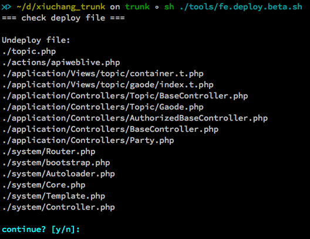
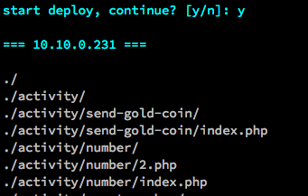
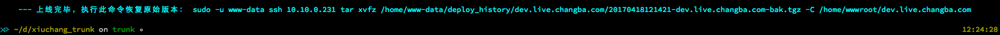
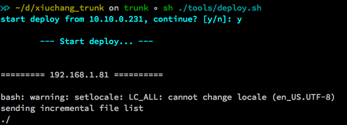
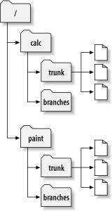

基于 Gulp 开发，主要包括：
第一种方式
<script src="/static/js/a.js"></script>
<script src="/static/js/b.js"></script>
<script src="/static/js/c.js"></script>
<script src="/static/js/d.js"></script>
将会生成一个合并后的文件，并替换成类似这样：
<script src="/static/js/com_cb_xxxxxxxxx.js"></script>
第二种方式
<script src="/static/js/lib.js"></script>
// lib.js
(function() {
var srcPath = '/static/js/';
document.write('<script src="' + srcPath + 'a.js"><\/script>');
document.write('<script src="' + srcPath + 'b.js"><\/script>');
document.write('<script src="' + srcPath + 'c.js"><\/script>');
document.write('<script src="' + srcPath + 'd.js"><\/script>');
}());
<script src="/static/js/demo.js"></script>
<script src="/static/js/demo.js?v=cf6d21e.js"></script>
<body>
<script type="text/javascript">
function demo() {
.....
}
</script>
</body>
<body>
<script type="text/javascript">function demo(){.....}</script>
</body>
<script src="/static/js/demo.js"></script>
<script src="//cbshowhot.cdn.changbaimg.com/static/js/demo.710a2da.js"></script>
为标签增加 nocdn 属性则不会被发布到 CDN，例如：
<script src="/static/js/demo.js" nocdn></script>
gulp datauri -f "/your/path/demo.png"下列内容会自动复制到剪贴板：
data:image/png;base64,iVBORw0KG......gulp alioss -f "/your/path/demo.png"生成：
http://cbshowhot.cdn.changbaimg.com/-/19bb85c1291945b1/demo.pnggulp resource生成：
http://cbshowhot.cdn.changbaimg.com/-/0c952f5370416f21/resource.js问题：现有 svn up 的部署方式有一定的局限性
解决：改为主动发布的形式
主要分为四步：
编译项目前先做文件对比
发布到回归机（测试机）
如果测试有问题可以立即回滚
最后通过 rsync 同步到线上
首先需要把 SVN 目录结构修改成经典分支模型
然后创建类似这样的本地目录
|-- root | |---- project -> ./project_trunk/ |---- project_trunk |---- project_branch_name_1 |---- project_branch_name_2 |---- project_.....很明显，svn trunk 要 checkout 到 project_trunk 目录下
进入 project 目录，可以自由切换分支：
sh ./project/branch_switch.sh进入 project 目录，可以创建分支：
sh ./project/branch_create.sh 分支名可以合并分支到主干：
sh ./project/branch_merge.sh trunk也可以 checkout 其他分支：
sh ./project/branch_checkout.sh 分支名所有操作都在 project 目录下完成
谢谢！